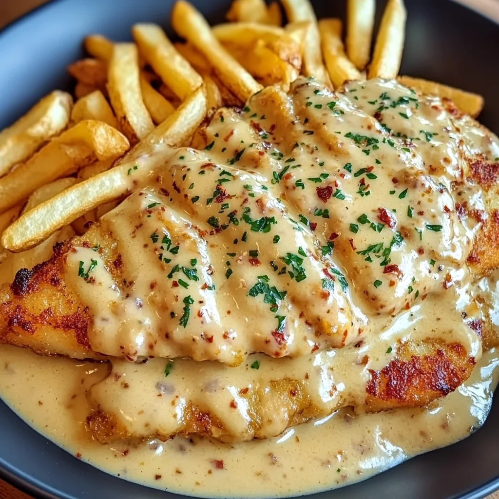

Hähnchen–Knoblauch–Parmesan
Privates Rezept • Bring! nutzt diese Seite als Link + (optional) Bildquelle

🧾 Zutaten
- 2 Hähnchenbrust
- 2 Knoblauchzehen
- 200 ml Sahne
- 80 g Parmesan
- 1 TL Paprika
- 1 Schuss Zitronensaft
- Kräuteröl
- Salz & Pfeffer
👨🍳 Zubereitung
- Hähnchen salzen/pfeffern und in Kräuteröl scharf anbraten.
- Knoblauch fein hacken/pressen und kurz mitbraten.
- Mit Zitronensaft ablöschen.
- Sahne zugeben, Parmesan einrühren und kurz köcheln lassen.
- Mit Paprika abschmecken und servieren.